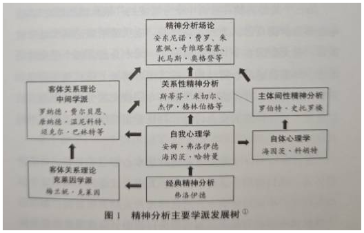

第一章 自体心理学及其发展
本章涉及三个部分：第一是自体心理学在当代精神分析中的历史位置；第二是自体心理学是如何发展而来的，自体心理学创始人科胡特的生平以及他的临床工作对自体心理学发展的影响；第三是自体心理学在当代已有的发展。
自体心理学自 1977 年诞生至今，已经有 49 年的历史；如果从 1971 年科胡特自体心理学的系统思想的形成算起，至今则有 55 年的历史。在这期间，自体心理学经历了许多发展。还有学者认为自体心理学起源于 1959 年，理由在于科胡特的内省-共情理论是在 1957 年提出、1959 年发表的。
自体心理学并非孤立产生，而是在精神分析不断发展与演进的历史过程中逐渐形成的。精神分析主要学派的发展脉络如图 1 所示。

图 1 精神分析主要学派发展树①
① 本图版权为徐钧所有，引用时，请标记出处。
自体心理学在精神分析中的位置
1895 年，西格蒙德·弗洛伊德（Sigmund Freud）开始发展精神分析，但从那时起到 1939 年他去世，这一理论体系经历了多次发展，其前后观点并不完全一致。弗洛伊德的理论中有三个很重要的概念。
第一个是“无意识”，指的是一个人的言行或心理问题，可能受到他自己意识不到的一些心理内容的影响。
第二个是“因果原则”，即一个人所产生的心理问题与他过去的生活和所遭遇的事件是相关的，特别是 6 岁之前发生的事情与他成年之后的心理问题、心理困扰和问题行为相关。
以上是弗洛伊德的观点中最重要的两点。
第三个是经典精神分析中十分重要的“俄狄浦斯理论”，这也是弗洛伊德自己认为非常关键的。俄狄浦斯理论其实经常被误解，很大原因在于“俄狄浦斯”一词本身包含四个俄狄浦斯概念，即俄狄浦斯心智结构、俄狄浦斯情境、俄狄浦斯阶段和俄狄浦斯情结，而弗洛伊德并没有专门撰文区分这些概念。我在这里不展开详细的概念讨论，只是希望帮助读者了解其中的差异。
俄狄浦斯心智结构是指人类的基本心智三元关系。弗洛伊德认为，俄狄浦斯（结构）是一个人进入社会的基础。这个基础存在于一个人的生活中，通常体现在人际关系层面。而在关于俄狄浦斯阶段和俄狄浦斯情结的讨论中，焦点则集中在个体与异性的关系上。
在与俄狄浦斯相关的概念中，所谓的“三元关系”指的是哪三元呢？这里的三元，是指主体、所爱的对象，以及这两者之间的一个禁止者。
比如，当一个男孩三四岁的时候，他可能希望一直和妈妈在一起，但因为爸爸和妈妈有正常的生活交流，孩子不可能完全占有妈妈。这个时候，爸爸实际上是一个参与者，当孩子对妈妈投注爱的时候，就会感觉妈妈对他的爱被爸爸分掉了。于是，孩子和爸爸之间就产生了一种竞争。为谁而竞争呢？妈妈。所以爸爸的角色是一个竞争者，也可以说是一个禁止者——他禁止孩子完全占有妈妈。
当然，也可能存在另一种情形：孩子和爸爸之间的关系很亲密，这时妈妈就作为一个竞争者参与进来。这同样构成了一个俄狄浦斯的三角结构（弗洛伊德，1998）。
这个结构对个体有什么意义呢？一个人成年之后，会面临很多任务，包括融入社会、面对婚恋生活等。这些都是很重要的过程。例如，当一个人在生活中爱上另一个人时，他可能会遇到某种社会性的阻碍，或受到他人的阻碍，而这些受阻的过程就对应了俄狄浦斯的三角结构。
举个例子：一个男孩到了 20 岁还和妈妈睡在同一张床上，并要求爸爸睡在另外一个房间，那么实际上他和妈妈的关系就过于亲密了，而作为竞争者的爸爸并没有出现。这样的孩子今后在婚恋关系中可能会遇到很多问题。比如，他和异性交往的时候可能会显得十分幼稚，不知道该怎样和异性交流。如果在恋爱过程中被拒绝了一次，他就不知道该如何调整自己的情感状态。因为他小时候的生活经验并没有教会他如何调节情绪，或者说他并没有一个可以练习情绪调节的环境，所以他很有可能一蹶不振，甚至出现一些焦虑、强迫的症状。这种状态源于他早期在三角关系中与妈妈过于亲密，而爸爸作为一个竞争者是缺席的，并没有发挥足够的限制作用，使得孩子缺乏必要的人际互动的练习机会。弗洛伊德发现，这样的过程对个体的影响是巨大的。
精神分析有哪些学派
弗洛伊德及其同事发展的这些理论，主要是围绕他们当年所做的一些临床案例展开的。晚年的弗洛伊德和女儿安娜·弗洛伊德（Anna Freud）以及学生海因茨·哈特曼（Heinz Hartmann）一起发展了适应理论。这是弗洛伊德理论晚期的主要形态，人们习惯上也称之为自我心理学（ego psychology）。当然，这一发展的出现与精神分析体系从德语被翻译为英语的过程相关。在精神分析的英译过程中，对精神分析科学性术语的强调，在很大程度上改变了精神分析的原貌。但这是一个更大的问题，我们仅在此讨论当前源自英语的精神分析理论的发展。如果读者对相关问题感兴趣，可以进一步阅读北京大学孙飞宇所著《从灵魂到心理——关于经典精神分析的社会学研究》一书。书中对这个问题展开了富有见地的讨论。
在当代精神分析中，自我心理学依然很流行。有这样一种说法：自我心理学从维也纳学派晚期发展起来，在传入美国后，主导了北美精神分析界长达 70 年之久。在这 70 年间，许多心理学理论的发展都受到自我心理学的影响，甚至包括认知疗法的发展。现在，这一理论在北美精神分析界依然具有重要的影响力。
梅兰妮·克莱因（Melanie Klein）原本是中欧一位刚刚“出道”的精神分析学者，因为接受心理治疗而逐步接触精神分析，最初在桑多尔·费伦齐（Sándor Ferenczi）门下学习，不久又经其推荐，正式开始进行精神分析训练并接受精神分析。之后，她在卡尔·亚伯拉罕（Karl Abraham）那里接受分析训练，但遗憾的是，亚伯拉罕后来突然病逝——这时，亚伯拉罕对她的精神分析才进行了两年。所以在今天看来，克莱因并没有完整地完成精神分析训练。
1926 年，克莱因前往英国。由于英国距离当年精神分析的中心比较远，所以从中欧来的分析家在当时英国临床心理学家和临床医生看来是十分厉害的。
克莱因在英国艰苦地发展属于自己的精神分析思考。她在英国苦练临床精神分析，带领英国的一批弟子发展了自己独特的理论，形成了“克莱因学派”。
克莱因学派更重视的是俄狄浦斯关系的早期阶段。如果说弗洛伊德重视的是俄狄浦斯期的 3～6 岁，甚至是 3～10 岁儿童的发展，那么克莱因的理论和兴趣点则聚焦在 0～3 岁这个阶段，尤其是 0～2 岁的阶段。
在孩子 0～2 岁时，父母通常会对孩子的需要给予及时的满足和回应。也就是说，在这个阶段，当孩子有需求时，父母通常会先放下自己手中的事情，优先满足孩子。
当孩子到了四五岁的时候，父母可能就会让孩子等一等，晚一些再满足孩子。在克莱因看来，孩子的很多心理问题，包括成年后的问题，可能都来自人生更早期的刺激——母婴关系互动的失败。
这一理论更重视从早期的二元关系到三元关系的发展。在这个过程中，克莱因发展了自己的母婴关系理论，也就是关于好客体、坏客体以及从偏执—分裂位到抑郁位的二阶心位理论（克莱因，2014），这让克莱因学派后来在英国的发展中形成了一种独立的特点。1926—1939 年，英国的精神分析已经受到了克莱因的深远影响。
之后，克莱因与塔维斯托克中心及其他地方的英国学者一起发展了克莱因学派。这是精神分析的第二波发展。
1938 年，弗洛伊德带着他的维也纳团队流亡英国。1939 年弗洛伊德去世后，克莱因学派随即向从中欧移民过去的、以安娜·弗洛伊德为首的维也纳学派发起了挑战。
两个学派之间进行了许多辩论，而这些辩论推动了英国精神分析的发展。之后，两个学派各自保持独立，但共同商定：凡是接受克莱因学派训练的分析师，至少要有一位维也纳学派的督导师；凡是接受维也纳学派训练的分析师，至少要有一位克莱因学派的督导师。这就是英国那时候独特的精神分析训练体制。当时，英国还有一些分析家，既不愿意站在克莱因学派一边，也不认同安娜·弗洛伊德所属的维也纳学派。后来他们在英国创立了中间学派。中间（独立）学派的成员根据自己的理解和经验，同时结合了克莱因学派和维也纳学派的一些理论，发展出对母婴关系特别关注的客体关系理论的多种观点，形成了狭义的客体关系理论。
所以，客体关系理论实际上属于中间学派的思想内容，而克莱因学派的理论贡献虽然被认为属于广义的客体关系理论体系，但克莱因学派自身并不太愿意接受这一点，而更倾向于将自己视为经典精神分析的发展延续——尽管代表经典精神分析的维也纳学派并不这么认为。在英国的独立学派中，威廉·R. D. 费尔贝恩（William R. D. Fairbairn）、唐纳德·W. 温尼科特（Donald W. Winnicott）以及约翰·鲍尔比（John Bowlby），都是客体关系理论的重要代表，他们对全球的精神分析理论及其临床发展都产生了深远的影响。
科胡特生平及其临床工作
在同一时期，维也纳出现了一位精神分析的受训者。他就是海因茨·科胡特。
关于科胡特与自体心理学，有非常重要的一点需要澄清：在讨论自体心理学的发展时，经常有人把自体心理学误认为客体关系理论的一个分支。这个观点是错误的。也有人认为，自体心理学脱胎于客体关系理论。这也是错误的。
那么自体心理学来自哪里呢？自体心理学的基础及其发展，更偏向于维也纳学派的经典精神分析传统。至少在一开始，自体心理学和客体关系理论是两个完全不同的发展方向。
要了解自体心理学，首先需要了解它的创始人科胡特。科胡特是犹太人，但他的名字和许多犹太人的名字不一样。从科胡特的爷爷辈开始，科胡特的家族就改用欧洲人而不是犹太人的姓氏。“海因茨”实际上是一个德语名字，反映出科胡特的家族已经很好地融入了欧洲社会。科胡特的父亲是一位十分成功的纸业商人，也是一位业余钢琴家。他原本是希望往音乐方向发展的，但是从战场回来之后，他在音乐方面的灵感可能受到创伤后应激障碍的影响，因此他无法继续追求音乐事业，转而经商，并取得了巨大成功。
科胡特是家中独子。在那个年代，父母只生一个孩子是非常罕见的事情。所以，当父亲因为淋巴癌去世后，科胡特受到了很大的打击，甚至一度患上抑郁症。
科胡特和弗洛伊德一样，都在维也纳大学接受过医学训练。在从事精神分析之前，他们的专业方向都是神经生理学。当时，科胡特是维也纳大学医学院的在读学生，他知道自己患了抑郁症。于是，他就去寻求一些精神分析家的帮助，但最初几位分析家的分析并不成功。直到科胡特找到了弗洛伊德的同事奥古斯特·艾克霍恩（August Aichhorn），接受了他的分析，才真正体会到精神分析的魅力。因为科胡特的抑郁症不是特别严重，更像是未能完成对父亲去世的哀悼，所以他在一段时间之后便获得了疗愈。科胡特对精神分析产生了浓厚兴趣，所以他继续在艾克霍恩那里接受分析。大概两年后，在纳粹德国吞并奥地利的时候，这段分析才被迫中止。
纳粹查抄了弗洛伊德在维也纳的家，并威胁要对他实施逮捕，甚至连安娜·弗洛伊德也被带走了几天。1938 年，在时任英国精神分析学会主席的欧内斯特·琼斯（Ernest Jones）和拿破仑的曾侄孙女波拿巴公主的帮助下，弗洛伊德离开了维也纳，流亡英国。
弗洛伊德离开维也纳的时候，科胡特作为精神分析的追随者和正在受训的学生，专程去给弗洛伊德送行。科胡特印象最深刻的一幕是，弗洛伊德在火车上向众人挥手告别。科胡特当时感觉弗洛伊德是在对他挥手。多年之后，这一幕仍然深深地印刻在他的脑海中，对他的精神分析之路产生了重要影响。
由于维也纳的时局不太好，科胡特就把他的母亲送到了美国芝加哥。1938 年，他获得了医学博士学位，于是准备离开维也纳。
科胡特联系了当时欧洲著名的犹太拉比。在拉比的帮助下，他与一百多名犹太青年一同跨越国境，离开了奥地利。他们一路向北，途经法国海岸，最终于 1939 年抵达英国。入驻难民营之后，他患上了肺结核。那时候青霉素还没有普及，加之难民营条件艰苦，他的身体状况很不乐观。好在一年之后，他的肺结核终于痊愈。他注意到德国对英国的进攻，对安全感到担忧，所以又离开了英国，前往美国芝加哥与母亲会合。
科胡特来到芝加哥之后，在芝加哥医学院当医生。当时，他希望加入芝加哥精神分析学院——该学院是由弗洛伊德的学生弗朗兹·亚历山大（Franz Alexander）创办的。芝加哥精神分析学院以他在欧洲的受训时间较短为由，让他继续接受训练。从 1946—1950 年，科胡特在这所学院接受了四年训练，终于如愿以偿。当时，他面临两个选择：可以留在芝加哥医学院继续当医生并从事神经研究——他所在的神经实验室是一个十分杰出的医学研究中心；也可以去芝加哥精神分析学院发展。他选择了后者。
1950 年，他开始独立执业，从事精神分析工作。几年后，他成为训练分析家和督导分析家。1964 年，他开始担任美国精神分析协会主席。1965 年，他成为国际精神分析协会副主席。
那时，他经常邀请安娜·弗洛伊德来美国讲学，自己也接受了安娜·弗洛伊德的案例督导。有一段时间，安娜·弗洛伊德既是他的同事，也是他的督导师。在这个过程中，他注意到了临床上的一类现象。
科胡特曾经遇到过这样一位来访者：无论他如何解释和说明，这位来访者都会攻击他。科胡特当时正在接受精神分析的督导，他自己也在不断思考；然而，对这位来访者而言，这些解释和说明并没有什么作用。他依然频繁受到来访者的攻击。
在艰难地工作了一段时间之后，科胡特尝试转变工作思路：不以自己的理论理解去给来访者做诠释，而是专注倾听来访者想表达的内容。科胡特发现，当他以这种态度去倾听的时候——只对来访者所说的内容进行一些复述，帮她澄清一些不清晰的东西或做一个小结——就能帮助来访者厘清思路，让她平静下来。治疗也得以顺畅地向前推进。
在推进治疗的同时，科胡特开始尝试把自己对来访者的理解以诠释的方式传达给来访者。这时，来访者就不再进行攻击，反而认为科胡特非常理解她，而且她也能够自我接纳。
在这个个案之后，科胡特又陆续遇到了一系列类似的个案，并在其中发现了临床工作的方向。他认为，分析家首先要做的是认真倾听来访者所说的内容，理解其中蕴含的情感，而分析家自己的理论应该成为后台而不是前台的东西。
于是，科胡特在 20 世纪 60 年代组织了一个小组——“自恋研究小组”。这个小组是后来的自体心理学发展的前身。
当时这个小组有七个人，每个月都会进行讨论。科胡特结合自己的临床经验以及从小组讨论中提炼的思想，在 1971 年出版了一部关于自恋人格障碍治疗的专著：《自体的分析——一种系统化处理自恋人格障碍的精神分析治疗》（The Analysis of the Self: A Systematic Approach to the Psychoanalytic Treatment of Narcissistic Personality Disorders，后文简称《自体的分析》）。这部著作在精神分析界引起了很大反响，为自恋人格障碍的研究提供了全新的视角。
弗洛伊德曾经公开表示，患有自恋人格障碍的来访者依从性很差，无法产生移情，所以是无法被分析的。科胡特则提供了这样一个系统性的视角，使自恋人格障碍患者也可以接受精神分析。
当时，安娜·弗洛伊德给科胡特写信，在信中表达了对科胡特这本书的认可，认为这本书为精神分析提供了有益补充，对精神分析的发展有重要的推动作用。
虽然这本书获得了巨大成功和广泛赞誉，但在书出版的第二年，科胡特的生活并不平静。科胡特的母亲去世，而他本人也在当年被诊断出淋巴癌。同时，有些同行对他的新观点起了嫉妒和戒备之心。科胡特因此辞去所有职务，在家休养，并将所有的精力都放在临床精神分析、督导和学术研究上。
1977 年，科胡特出版了《自体的重建》（The Restoration of the Self）一书，并提出了“自体心理学”的概念——相对于经典精神分析，自体心理学是一个平行的系统（科胡特，1977/2013）。当时，一些保守的精神分析家并不认同这种说法，觉得科胡特开始离经叛道了。芝加哥精神分析学院直接取消了科胡特的督导分析家和训练分析家的资格，只保留了他的分析家资格。当时的整个精神分析圈，特别是北美的自我心理学精神分析圈，对科胡特十分排斥。凡是引用了科胡特论文的文章，均不会被发表。
同一时期，北美的人文思潮越来越强调个人主义和独立自由的精神，因此科胡特受到了社会的关注。美国的《时代周刊》和《人物周刊》都曾报道过科胡特，并引用了其著作中关于自恋的内容展开讨论。
参与这样的社会思潮并不是科胡特的兴趣所在。他的兴趣点在临床工作上。在《自体的重建》出版的那一年，科胡特因为癌症扩散而开始接受化疗，但他并没有停止与精神分析相关的工作。1979 年，他发表了论文“Z 先生的两次分析（The Two Analyses of Mr. Z）”。这是一篇案例报告，但这篇报告饱受争议，有人甚至认为 Z 先生就是科胡特本人。
一些不认可科胡特的自体心理学观点的北美分析家，对论文的内容进行揣测，并借此诋毁科胡特，说他是同性恋和性变态。据科胡特的一些同事回忆，当年在案例督导中，科胡特经常和他们讨论关于 Z 先生案例的工作进展。
1981 年，科胡特完成了《精神分析治愈之道》（How Does Analysis Cure?）的写作，但还没等到这本书出版，他就去世了。
1984 年，这本书在科胡特家人和同事的协助下终于面世。这本书凝结了科胡特在职业生涯晚期对精神分析的思考（科胡特，1984/2011）。现在的自体心理学流派认为，科胡特去世前，他的理论已经开始逐步成形。如果科胡特的寿命再长一点，精神分析自体心理学肯定会有更大、更系统的发展。
1981 年，在去世前几天，科胡特作为国际自体心理学学会的主要领导者，前往美国加州大学伯克利分校参加第四届国际精神分析自体心理学大会。当时，他已经出现了肝腹水，加上坐了很长时间飞机，身体非常疲惫。因此，他不得不让宾馆帮他叫来救护车，送他前往会场参加会议。
当科胡特走进会场时，有的同事和他打招呼，但科胡特并未回应，只是一直往前走。他在讲台上宣读了他的论文“论共情（On Empathy）”，读完后和大家告别就转身离开了。科胡特当天又飞回了芝加哥，晚上就病危了。对于癌症晚期的患者来说，这样飞来飞去，身体是扛不住的。
科胡特被送往医院抢救。负责抢救的医生是一个第一天上班的实习生。这个实习生之前从没进行过急救，面对这样一个危重患者，紧张得完全没有方向了。科胡特见状，把他叫到身边。医生以为科胡特要交代遗嘱，没想到科胡特却安慰他，让他别紧张，按照操作手册一步步来。这个医生平静下来，按照抢救流程一步步地操作，但遗憾的是，他最终还是没能挽回科胡特的生命。科胡特在第二天去世了。科胡特去世之后，他的太太致电他的同事，一方面是代丈夫与大家告别，另一方面是转达科胡特的歉意——他特意交代，一定要向他的同事说声抱歉。那天在加州大学伯克利分校的会场，科胡特之所以没有回应同事的问候，是因为身体原因——他担心在发言的时候晕倒，所以他为了保持体力，没有向他们打招呼。此外，科胡特还在遗嘱中要求把他的案例报告全部销毁。
在科胡特去世后，科胡特生前的同事查尔斯·B. 斯特罗齐尔（Charles B. Strozier）撰写并出版了一本科胡特人物传记：《科胡特传——一位精神分析师的诞生》（Heinz Kohut: The Making of a Psychoanalyst, Strozier, 2001）。该书通过回忆和访谈的形式，讲述了科胡特一生的经历。这本传记在自体心理学圈引起了热烈反响，但由于部分内容并未获得科胡特家属的认可，也引发了一些争议。此外，科胡特的儿子曾经推荐笔者阅读和翻译由科胡特在芝加哥大学的同事编撰的科胡特书信集《生命的曲线》[The Curve of Life: Correspondence of Heinz Kohut (1923–1981)]。这本书信集收录了科胡特从童年直至去世前的大量通信，内容十分珍贵，为读者了解科胡特的一生提供了独特视角。
与自体心理学相关的学派
主体间性学派
科胡特在 1975 年成立了第二个研究小组：芝加哥小组。这个小组一直延续到他去世。其实“自体心理学”这个名称是在 1977 年正式提出的，芝加哥小组在其中起了很大的推动作用。自体心理学因此有了新发展，与此同时也催生了一些重要人物，如约瑟夫·利希滕贝格（Joseph Lichtenberg）、罗伯特·D. 史托罗楼、伯纳德·布兰德查夫特（Bernard Brandchaft）和乔治·E. 阿特伍德（George E. Atwood）。利希滕贝格是自体心理学“动机系统理论”的发展者，也是国际精神分析自体心理学协会的第一任主席。
史托罗楼是主体间性学派的代表人物之一，毕业于哈佛大学临床心理学专业。他取得博士学位后，一直在做心理学杂志的编辑，同时也做临床工作。他读了《自体的分析》之后，发现科胡特的许多观点对他的临床工作帮助很大，并且他之前也思考过这些观点，但是并未成形。史托罗楼给科胡特写了一封信，表示想和他见面。科胡特回了信，两人在芝加哥见了面。第一次见面时，他们对自体心理学的临床工作和理论做了很多讨论。科胡特觉得，在他没有亲自教过的人中，史托罗楼是最了解他思想的人。
史托罗楼曾受科胡特邀请参加国际精神分析自体心理学大会，撰写了数篇论文，聚焦于科胡特和卡尔·罗杰斯（Carl Rogers）理论观点的比较。史托罗楼是一位很活跃的学者，发表了超过 100 篇论文。此外，他还与伯纳德合作，在第一届和第二届国际精神分析自体心理学大会上，发表了与经典自体心理学不同的观点。这个观点就是后来的主体间性思想的开端。主体间性学派和自体心理学之间存在一种比较特殊的关系。尽管史托罗楼认为主体间性学派和自体心理学派有很大的区别，但是实际上，主体间性学派大部分的发展是在自体心理学内进行的，所以我们一般也把主体间性学派看成广义的自体心理学思潮的一个发展分支，二者具有一定的相似性——尽管史托罗楼等对此可能有自己的不同意见。
史托罗楼和阿特伍德的很多著作，为主体间性精神分析理论的发展做出了重要贡献。史托罗楼认为，科胡特晚期的思想以及主体间性学派的理论与现象学哲学有着密切关联。
65 岁时，史托罗楼在美国加州大学河滨分校取得第二个博士学位，研究现象学，之后撰写了《主体性的结构——精神分析现象学与情境主义的探索》（第二版；Structures of Subjectivity: Explorations in Psychoanalytic Phenomenology and Contextualism, Second Edition）（Atwood & Stolorow, 2014）。
1994 年，史托罗楼开始对自己的理论进行反思，并与阿特伍德及唐娜·M. 奥林奇（Donna M. Orange）共同撰写了《体验的世界》（Worlds of Experience）一书，关注主体间性关系中体验的过程，即一个人对世界的体验过程和复杂性过程（史托罗楼等，2023）。
关系性精神分析
1982 年，杰伊·格林伯格（Jay Greenberg）和斯蒂芬·米切尔（Stephen Mitchell）提出了关系性的概念，引起了学界的广泛关注（Kuchuck, 2021）。随后，以关系性为核心，松散地聚集了客体关系理论、自体心理学、人际学派等多种思想的北美关系性精神分析运动逐渐开展，成为精神分析发展历程中的一股新思潮。杰茜卡·本杰明（Jessica Benjamin）、刘易斯·阿伦（Lewis Aron）等人，都是其中重要的参与者。
与此同时，在米切尔与主体间学派的代表人物史托罗楼等人的对话过程中，不少自体心理学家也开始加入关系性精神分析的讨论与发展。因此，当代北美的关系性精神分析学派和现代自体心理学学派经常是混合在一起发出声音的。
关系性精神分析中的“关系”和客体关系中的“关系”概念并不相同，前者包含着相互性。一个人的主体是关系性所构建的——当我们感受到和另一个具有主体的人的关系时，都会感受到这种相互性关系给自己带来的一种主体体验——侧重体验的是过程性、流动性和复杂性。在人际关系和临床过程中，关注这种复杂的、动态交互的体验尤为重要。
同时，科胡特的学生之一罗伯特·M. 加兰特泽-利维（Robert M. Galatzer-Levy）在 1978 年将混沌数学的概念引入精神分析（利维，2025），而史托罗楼 1997 年在“动态的二元主体间系统：精神分析的一种演进范式（Dynamic, Dyadic, Intersubjective Systems: An Evolving Paradigm for Psychoanalysis）”一文里提出的“非线性动力系统”，也就是后来的复杂性系统理论，在当代由威廉·科伯恩（William Coburn）持续发展。他们更重视临床过程的非线性过程以及复杂性系统理论在精神分析中的运用，关注临床的关系性过程中的初始敏感性和非线性特点，并以复杂性系统理论和激进的情境主义的视角来进行理解和工作（科伯恩，2023）。
另外，由丹尼尔·斯特恩发起的“波士顿变化过程研究小组”（波士顿变化过程研究小组，2014），以及儿童发展学派的学者比特丽斯·毕比（Beatrice Beebe）也发展了主体间的临床研究，并将大量的婴儿研究和依恋理论的研究加入其中（毕比等，2015），推动了北美自体心理学和关系性精神分析的同步发展。
在当代，许多北美的自体心理学家和主体间性精神分析家，更愿意称自己为关系性精神分析家——虽然“关系性精神分析”这个称谓同时也被其他独立的精神分析家所使用，包括关系性精神分析的第二代、第三代学者，而这也让事情变得融合和复杂。在当代自体心理学的发展中，许多理论和科胡特的理论已经不太一样了。如果有机会参加国际精神分析自体心理学大会，参会者往往会被问及是支持科胡特模型还是史托罗楼模型。
虽然还是存在许多经典自体心理学模型的支持者，但是更多的是主体间模型（史托罗楼模型）的支持者。在北美，关系性精神分析很有话语权。不过近年来，也出现了巴里·马吉德（Barry Magid）和埃斯特尔·沙恩（Estelle Shane）等整合了米切尔的关系精神分析与科胡特的自体心理学而形成的关系性自体心理学，以及国际自体心理学学会的执行主席乔治·哈格曼（George Hagman）等分析家根据临床经验整合了科胡特的自体心理学与史托罗楼的理论而形成的主体间自体心理学。这些新发展都是在重新审视科胡特等前辈的精神遗产以及相关发展中的临床研究和讨论的基础上形成的（哈格曼等，2023）。
而在中国，笔者在研究和探讨科胡特思想的过程中，也发现了科胡特思想与弗洛伊德经典理论的紧密相关性，因此在弗洛伊德和科胡特的临床思想的基础上，结合荣格和比昂的临床进展，将当代精神分析场论的临床工作整合至科胡特的经典自体心理学工作中，并提出自体心理学新古典的三类拓扑学观点，即：意识、前意识、无意识的第一拓扑学；自我、它性（本我）、超我结构的第二拓扑学；以场论和命运共同体为核心的第三拓扑学。我将以这一新古典的视角来重新阐述精神分析及自体心理学的中国形态。
附：图 1 图示文字
- 经典精神分析：弗洛伊德
- 自我心理学：安娜·弗洛伊德、海因茨·哈特曼
- 客体关系理论·克莱因学派：梅兰妮·克莱因
- 客体关系理论·中间学派：罗纳德·费尔贝恩、唐纳德·温尼科特、迈克尔·巴林特等
- 自体心理学：海因茨·科胡特
- 关系性精神分析：斯蒂芬·米切尔、杰伊·格林伯格等
- 主体间性精神分析：罗伯特·史托罗楼
- 精神分析场论：安东尼诺·费罗、朱塞佩·奇维塔雷塞、托马斯·奥格登等